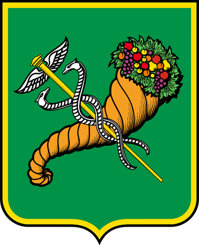

Цікаві факти про Харків
Дивовижне, маловідоме та просто цікаве про моє місто
Десять фактів, які варто знати
- Перша столиця. З 1919 до 1934 року Харків був столицею Радянської України, тому його й досі часто називають «першою столицею».
- Один з найбільших майданів. Майдан Свободи площею 11,9 гектара посідає шосте місце за розміром у Європі та дванадцяте у світі.
- Перший хмарочос. Держпром (1925–1928) став першим радянським хмарочосом, а у 2017 році його внесли до попереднього списку Світової спадщини ЮНЕСКО.
- Нобелівські лауреати. З Харковом пов'язані імена трьох нобелівських лауреатів — біолога Іллі Мечникова, фізика Льва Ландау та економіста Саймона Кузнеця.
- Розщеплення атома. У 1932 році харківські фізики вперше в СРСР розщепили ядро атома літію.
- Друге метро України. Харківський метрополітен відкрили 23 серпня 1975 року — другим в Україні після київського. Сьогодні він має три лінії та 30 станцій.
- Школи під землею. Під час повномасштабної війни станції метро стали укриттям для тисяч харків'ян, а згодом на кількох станціях облаштували класи для навчання школярів.
- «Батько української прози». Письменник Григорій Квітка-Основ'яненко народився в Основі — нині це частина Харкова.
- Шедевр Рєпіна. У Харківському художньому музеї зберігається друга версія знаменитої картини Іллі Рєпіна «Запорожці пишуть листа турецькому султанові».
- Найвища бронзова композиція. Пам'ятник Тарасові Шевченку заввишки понад 16 метрів на момент відкриття в 1935 році був найвищою бронзовою композицією в СРСР.
Символи міста
Що означають кольори та зображення на гербі Харкова

Герб Харкова
Сучасний герб міста затвердили 14 вересня 1995 року. На зеленому щиті зображено перехрещені ріг достатку, наповнений плодами та квітами, і кадуцей — золотий жезл зі срібними крилами, обвитий зміями.
Що означають символи
- Зелений колір символізує надію, радість і достаток.
- Ріг достатку — природні багатства краю.
- Кадуцей — атрибут бога Меркурія, покровителя торгівлі та мандрівників. Він нагадує, що Харків здавна славився ярмарками.
- Змії на жезлі символізують мудрість.
Цікаво: схрещені ріг достатку й кадуцей утворюють літеру «Х» — першу літеру назви міста.
Відомі люди, пов'язані з Харковом
Науковці, митці й просвітники, чиї імена назавжди вписані в історію міста
-
Григорій Сковорода
1722–1794
Філософ і поет, викладав у Харківському колегіумі.
-
Василь Каразін
1773–1842
Учений і просвітник, засновник Харківського університету.
-
Григорій Квітка-Основ'яненко
1778–1843
Письменник, «батько української прози», народився в Основі.
-
Ілля Мечников
1845–1916
Біолог, випускник Харківського університету, лауреат Нобелівської премії 1908 року.
-
Олексій Бекетов
1862–1941
Архітектор, автор понад 40 будівель у Харкові. Його ім'я носить станція метро.
-
Лесь Курбас
1887–1937
Режисер, засновник театру «Березіль», який з 1926 року працював у Харкові.
-
Лев Ландау
1908–1968
Фізик-теоретик, у 1932–1937 роках працював у Харкові. Лауреат Нобелівської премії 1962 року.
-
Сергій Жадан
нар. 1974
Сучасний письменник, поет і музикант, який живе в Харкові.